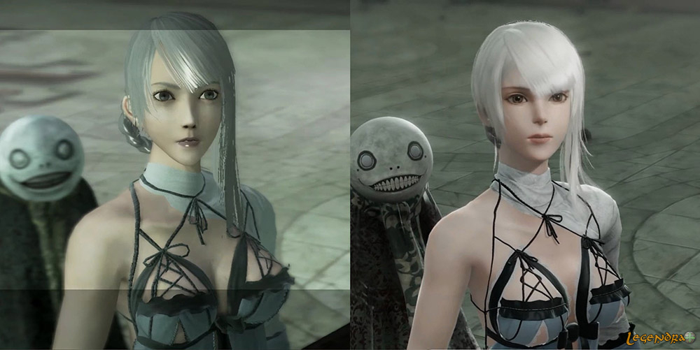
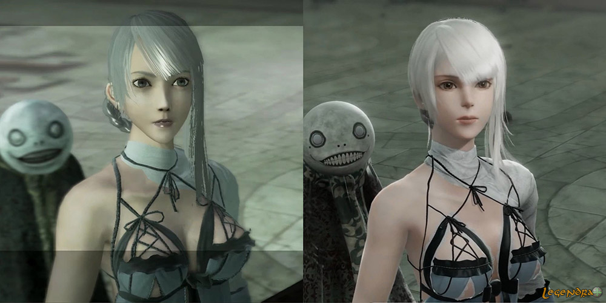
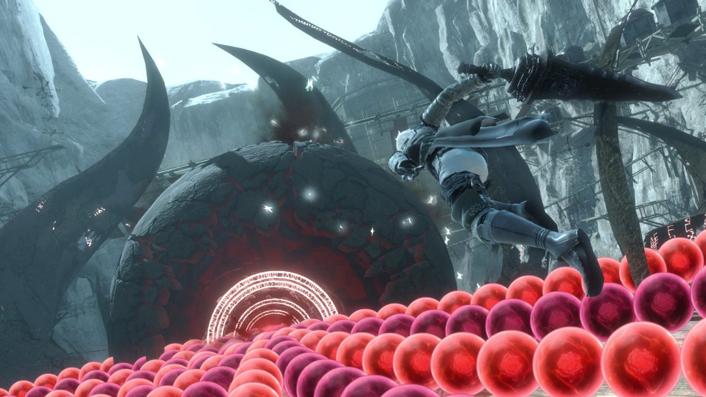
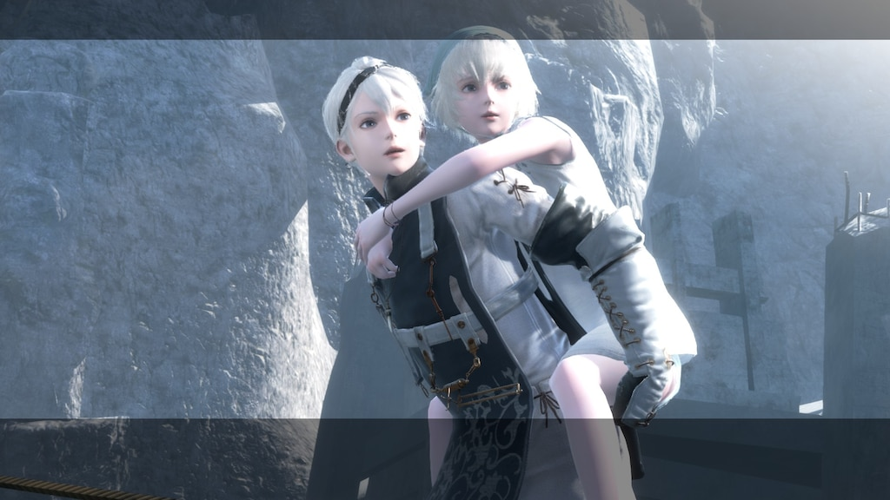
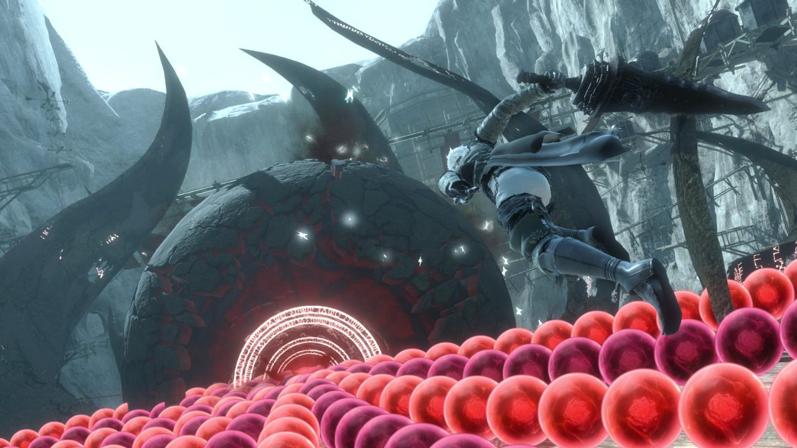
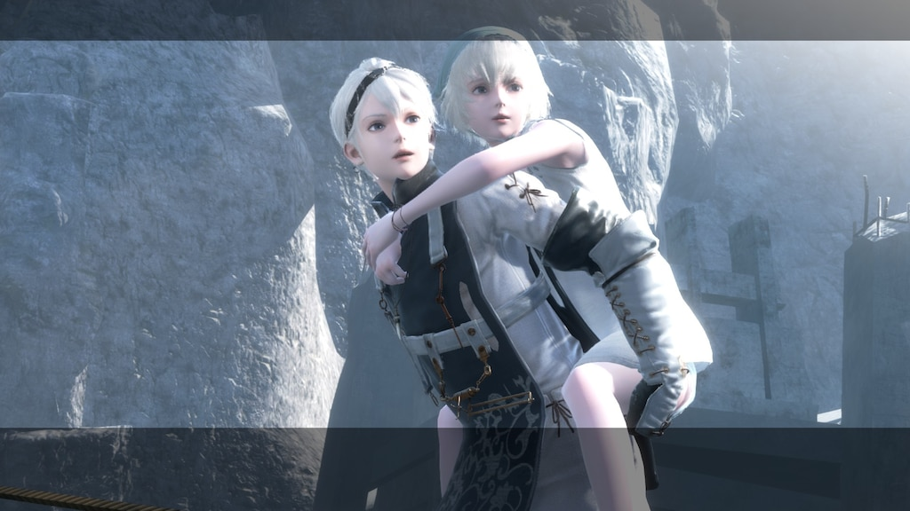

Nier initialement sortie en 2010 à eu le droit à un remaster en 2021. Le jeu sortie en 2010 a eu le droit à deux versions : une ou le protagoniste est un jeune homme, le frère de Yonah sortie Japon (Nier Replicant) et une autre ou on incarne le père de Yonah sortie dans le reste du monde (Nier Gestalt). Nier est un jeu vidéo de type action-RPG développé par Cavia et édité par Square Enix. Il est distribué en avril 2010 sur PlayStation 3 et Xbox 360. Au Japon, la version PS3 est titrée Nier Replicant et la version Xbox 360, Nier Gestalt. Une version remastérisée intitulée NieR Replicant ver.1.22474487139... est sortie en avril 2021 sur Microsoft Windows, PlayStation 4 et Xbox One. Il existe deux versions de ce jeu, « NieR Replicant » et « NieR Gestalt ». Dans la première, NieR est un jeune garçon et Yonah est sa sœur, tandis que dans la seconde – celle que nous connaîtrons sous le nom NieR –, NieR est un adulte est le père de Yonah. Je parlerais de NieR premier du nom, donc je le citerais comme étant son père. Dans un monde post-apocalyptique aux allures de fantaisie, vous contrôlerez NieR. Votre quête ? Sauver Yonah, votre fille, de la maladie qui la ronge …
 

 


